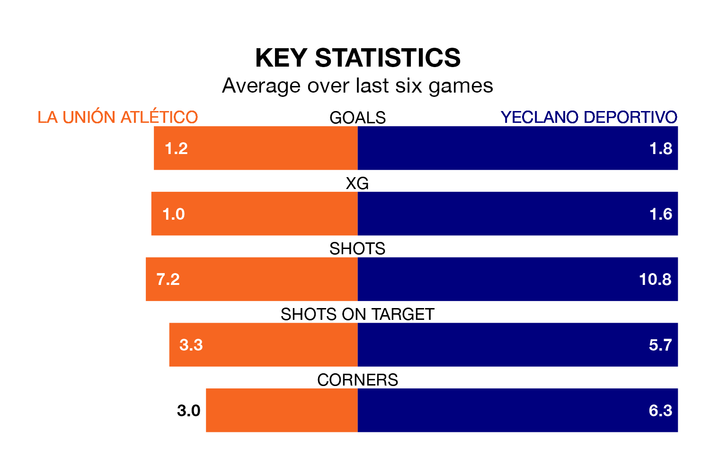

La Unión Atlético host Yeclano Deportivo on early Sunday on the back of three consecutive wins in the Segunda División RFEF Group 4.
La Unión Atlético have picked up 14 points from their last six games, and they face a Yeclano Deportivo side who have also won their last two matches, and collected 11 points from the last possible 18.
With 41 goals in 29 games so far this season, Yeclano Deportivo are the league's second-highest scorers with 1.4 goals per game. And they are conceding fewer than average, letting in 25 goals at a rate of 0.9 per game.
La Unión Atlético are also above average scorers, with 1.1 goals per game, compared to a league average of 1.0. They have also conceded 1.1 goals per game.
The visitors are second in the table after 29 games, of which they have won 16 and drawn eight, earning 56 points.
La Unión Atlético are eight places behind Yeclano Deportivo in 10th, with 11 wins and four draws putting them on 37 points.
In the last five years, La Unión Atlético and Yeclano Deportivo have played each other on four occasions. La Unión Atlético won one of them and Yeclano Deportivo the other.
On average, la Unión Atlético scored 0.5 goals and Yeclano Deportivo 1.5 in those matches.
Their last meeting was on November 26, when Yeclano Deportivo won 2-0 at home.
La Unión Atlético's last match was on March 31, a 2-1 win against Real Betis B, with Alberto Salido Tejero and José Adrián Ruiz Ortega getting the goals for la Unión Atlético.
Yeclano Deportivo beat Antoniano 2-0 last time out, also on Sunday, with Pablo Pérez Juan on the scoresheet.
Updated: 16:41 (UTC), 04/04/24